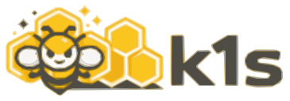

OnboardingFrom fresh clone to running demo in minutes. k1s keeps the control plane light, the UI live, and the YAML close to Kubernetes.
Provision the seeded demo profile, docs, API, dashboard, and sample apps in one shot.
make demoInstall editable mode and start the controller, then continue with the sample apply/status/log checks below.
make installmake loopmake apply-samplemake status-samplemake logs-sampleThis single page gets a new contributor or user from a fresh clone to a running demo, with pointers to the most useful docs and commands.
Command note: use Validated Procedures for the current copy/paste command readouts. This page keeps the onboarding flow and stable context.
Note: k1s is pre-1.0 and still evolving. The current line expands HA validation, stricter benchmark procedures, and operator runbook coverage, but production promotion still requires environment-specific security review and rollout validation.
Terminology: k1s Deployments are Deployment-like workloads; pods are the execution unit, and replicas are the desired pod count (same as Kubernetes); Service VIPs map to Services/ClusterIP.
Project philosophy: TENETS.md captures the core project stance, and docs/design/project-philosophy.md plus docs/design/cognitive-welfare-and-continuity.md define the precautionary position for later cognitive-substrate work.
crictl (see Operations Runbook)docker compose or podman composenix + direnv for the repo-local flake pathThis path is additive. The existing Debian/Ubuntu flow stays the same.
1) Enter the shell:
direnv allow
# or:
nix develop2) Bootstrap the editable Python environment:
python -m venv .venv
. .venv/bin/activate
python -m pip install -e .[dev]3) Inspect host vs shell requirements:
make env-doctor4) Use the CRI-oriented shell when needed:
nix develop .#criNotes
podman-compose, lint/test tooling, and CRI clients.make dev-local can manage local demo DNS/TLS state directly on Debian/RHEL and through the NixOS bridge helper on NixOS.make env-doctor reports whether the NixOS bridge is installed/imported and how the demo domains currently resolve.sudo install -D -m 0644 ops/nixos/k1s-local-dev-bridge.nix /etc/nixos/nixos/modules/k1s-local-dev-bridge.nix./nixos/modules/k1s-local-dev-bridge.nix to your host importssudo nixos-rebuild switch --impure --flake /etc/nixos#$(hostname -s)This path runs the current seeded dev-min profile, serves docs, starts the controller API/dashboard, registers a local node, and stages the blue/green sample workloads.
1) Start the seeded demo target:
make demoMakefilescripts/dev/run_profile.shscripts/init_demo.sh2) Open endpoints:
make demo uses the simple dashboard layout. The shared System Graph remains visible, but the HA Control Plane card and HA Members legend key stay hidden.3) Inspect via CLI while the demo runs:
python -m ae.cli status --wide
python -m ae.cli logs blue --tail 504) Tear down when done (stops stack, cleans containers; keeps state):
./scripts/init_demo.sh --down -y
# or
make demo-downTips
init_demo.sh mode? Use ./scripts/init_demo.sh ... directly or make demo-legacy ARGS="--docs-only -y -d".make demo and make demo-down.specs/examples/echo-multinode.yaml. mkdir -p ~/.config/containers/registries.conf.d
cat > ~/.config/containers/registries.conf.d/local-cache.conf <<'EOF'
[[registry]]
location = "localhost:5001"
insecure = true
[[registry]]
location = "localhost:5002"
insecure = true
EOF Or run with AE_USE_REGISTRY_CACHE=0.
Follow this if you want to see each moving part.
1) Install the package (editable dev mode):
python -m pip install -e .[dev]
# Optional: file watching for instant reconciles on spec changes
python -m pip install -e .[watch]2) Start ingress/docs fixtures (optional but recommended):
docker compose -f ops/dev/docker-compose.yaml up -dops/dev/docker-compose.yaml3) Run the controller with API + file watch:
python -m ae.controller --loop --specs specs/ --metrics-port 9108 --watchmake k1s-core-cri
# optional pairings:
make k1s-edge-cri
make k1s-edge-core-cridocs/guides/runtime-profiles.md, docs/reference/cri-containerd.md, docs/guides/multinode-lab.md.4) Apply and inspect a sample workload (Deployment):
python -m ae.cli apply -f specs/examples/echo.yaml
python -m ae.cli status echo --wide --events
python -m ae.cli logs echo --tail 50specs/examples/5) Kubectl‑like wrapper (optional; subset of ae):
k1s get apps
k1s get pods
k1s get services
k1s describe app/echo
k1s logs app/echo --follow --tail 100Note: k1s is a thin wrapper over ae for common get/describe/logs/rollout/scale/delete flows. For the full surface (plan/export/registry/tls/nodes/volumes/backup), use ae directly.
Optional: start the Kubernetes API shim for kubectl/helm parity
AE_APISHIM_ENABLE=1 AE_APISHIM_TOKEN=devtoken \
python -m ae.apishim serve --host 127.0.0.1 --port 8445
kubectl --server=http://127.0.0.1:8445 --token $AE_APISHIM_TOKEN get podsShim capabilities and gaps live in docs/reference/apishim-compatibility-matrix.md. Note: for TLS, add --tls, set AE_APISHIM_TLS_CERT/KEY, and use https:// with --insecure-skip-tls-verify or a trusted CA. Note: dev-only bypass is AE_APISHIM_ALLOW_ANON=1 (avoid for shared hosts).
Run with make <target>. You can override defaults via VAR=value make <target>.
Setup and quality
make install: install dev dependencies (pip -e .[dev]).make watch: install file-watching extras (pip -e .[watch]).make test: run unit tests (pytest -q).make lint: run ruff check + mypy src/ae.make env-doctor: report shell tools, compose availability, host sockets/services, and local DNS/TLS bridge status.make dev-local-clean: remove helper-managed local DNS/TLS state.make wheel: build a wheel into dist/.Local dev and samples
make dev-up / make dev-down: start/stop dev Docker Compose stack.make down: stop all dev/demo stacks (best-effort).make loop: controller reconcile loop (watch mode).make run: single reconcile pass.make dev-min / make dev-etcd / make k1s-core / make k1s-edge: runtime profiles with empty specs (no default apps).make k1s-core-cri / make k1s-edge-cri / make k1s-core-edge-cri / make k1s-edge-core-cri: strict CRI profile aliases.make edge-site-cri SITE_ID=<site> EDGE_PORT=<port> EDGE_HTTP_PORT=<port>: strict CRI multi-site edge helper.make dev-min-caddy / make dev-etcd-caddy / make k1s-core-caddy: same profiles with TLS hostnames for docs/api/dashboard.make apply-sample: apply specs/examples/echo.yaml.make status-sample: status for echo.make logs-sample: logs for echo.make k8s-smoke: export + validate sample Kubernetes YAML (no cluster required).make start-here: build docs and open docs/site/start-here.html.make haproxy-update: regenerate HAProxy config from controller API.make haproxy-watch: watch/reload HAProxy config from controller API.make install-systemd / make uninstall-systemd: install/remove systemd units.make install-docs-service / make uninstall-docs-service: install/remove docs service.make secrets-seal-demo: run the sealed-secret demo helper.Docs, labs, and playground
make docs: combine snapshots (if present), regenerate charts, build docs.make docs-export: build non-interactive HTML into docs/export (override with DOCS_OUT_DIR=).make docs-wiki-export: export wiki-friendly Markdown into docs/wiki (override with WIKI_OUT=).make docs-watch: rebuild docs when combined/combined.csv changes.make labs-up / make labs-down: host-controller dev-etcd wrapper (CLI/API only; no docs/Caddy).make labs-aio-up / make labs-aio-down: host-controller dev-etcd wrapper with Caddy/TLS and the dev-local helper defaults.make labs-k3d-up / make labs-k3d-down: bring up/down local k3d cluster for labs.make labs-apishim-env: print apishim tokens from the active dev-etcd profile (state/profiles/dev-etcd/apishim.env unless PROFILE_DIR= overrides it).make apishim-smoke: quick API shim health check on port 8445.make shim-helm-demo: run the helm shim demo helper.Demo workflows
make demo: run the current seeded demo profile (blue/green sample apps + docs/api/dashboard).AE_REGISTER_LOCAL_NODE=1 is set by default in demos/labs so the controller registers a local node for scheduling; unset to require explicit node registration.make demo-legacy: flag-driven init_demo.sh wrapper for legacy demo modes via ARGS="...".make demo-help: show demo script help.make demo-down: tear down demo stacks.make reg-cache-reset: clear local registry cache used by demos.make demo-hardened: run hardened demo flow.make demo-reset: reset demo/labs state and prune volumes.make dashboard-reload: reload controller under the dashboard supervisor.make dashboard-restart: restart the supervisor and reload.Integration and e2e
make integ-test: integration tests (pytest -q tests/integration/).make e2e / make e2e-multiport: run the multiport e2e script.Benchmarks (memory + runtime tooling)
make bench-mem-k1s: snapshot k1s memory.make bench-mem-k3s: snapshot k3s memory.make bench-mem-debug: quick sanity-check run with debug artifacts.make bench-mem-agg: aggregate latest snapshot under a label.make bench-mem-matrix-k1s: run k1s replica matrix snapshots.make bench-mem-combine: combine snapshots into combined/*.make bench-mem-verify: verify a snapshot and print per-container split.make bench-k3s-up / make bench-k3s-down: manage a k3s bench cluster.make bench-mem-matrix-k3s: run k3s replica matrix snapshots.make bench-mem-rollout-k1s: run k1s rollout snapshots.make bench-mem-rollout-k3s: run k3s rollout snapshots.make bench-mem-plot: render benchmark charts.make bench-mem-e2e-k3s-sudo: full k3s e2e (matrix + rollout + charts) with sudo.make bench-mem-e2e-k1s: full k1s e2e (matrix + rollout + charts).make bench-mem-e2e-k1s-sudo: k1s e2e with sudo snapshots.make bench-mem-e2e-k1nd: k1nd (k1s-in-Docker) e2e.make bench-mem-e2e-k1nd-sudo: k1nd e2e with sudo snapshots.make bench-mem-e2e-k1nd-quick: fast k1nd profile.make bench-mem-e2e-k1nd-resume-rollout: resume only the rollout phase.make bench-mem-e2e-k1nd-down: k1nd e2e then tear down compose.make bench-mem-e2e-all: run all baseline suites.make bench-mem-e2e-minimal: minimal baseline suite.make bench-watch-runtime: live runtime debug snapshotter.make bench-mem-e2e-baselines: run baseline suite matrix.make bench-mem-e2e-baselines-sudo: baseline suite with sudo.make bench-mem-docs: combine + plot + rebuild docs.make bench-retained-rebuild PROFILE=final STAMP=<fresh-stamp> DELETE_DROPPED=1: rebuild published artifacts from one validated rerun stamp plus the frozen 20260203 reference import.make bench-fix-perms: normalize artifact permissions.make bench-mem-backfill: backfill missing summary.json + rebuild docs.make bench-engines-clear: stop/remove all containers (dangerous).make bench-state-clean: remove benchmark-only state (state/bench-*).make dev-state-clean: wipe full state/ (requires CONFIRM=1).make bench-mem-backfill-oci: add OCI runtime metadata and recompute charts.make bench-mem-backfill-oci-latest: backfill OCI metadata for latest label only.make bench-mem-finalize-sudo: legacy finalize helper for mixed-ownership cleanup; retained publishing should use bench-retained-rebuild.make bench-mem-e2e-k3s: full k3s e2e (matrix + rollout + charts).make bench-mem-idle-k1s: idle baseline snapshot for k1s.make bench-mem-idle-k3s: idle baseline snapshot for k3s.Benchmark note
Images and containers
make image-docker: build controller image with Dockerfile.make image-podman: build controller image with Containerfile.make push-docker / make push-podman: push controller image.make docker-build-controller: build controller image (ops/images/controller.Dockerfile).make docker-run-controller: run controller container with specs/state mounts.Use this when you need the current canonical multi-node process (strict CRI, ingress mode validation, and security gates).
1) Start strict CRI profile entrypoints:
make k1s-core-cri
make edge-site-cri SITE_ID=sea-edge-02 EDGE_PORT=4224 EDGE_HTTP_PORT=8224
make k1s-edge-core-cri
make k1s-edge-node2) Run canonical ingress mode validation:
scripts/dev/validate_ingress_env.sh --lane core-proxy --watchdog
CORE_PROXY_FORCE_RATHOLE_RESTART=0 scripts/dev/run_ingress_lanes.sh --lanes core-proxy --yes
scripts/dev/run_ingress_lanes.sh --lanes core-to-edge-public --yes
EDGE_LOCAL_LISTENER_URL="https://lb-distribution-edge-local.home.arpa/" \
scripts/dev/run_ingress_lanes.sh --lanes edge-local --yes3) Run security gates:
scripts/dev/security_baseline_check.sh --fail-on high
scripts/dev/security_active_tests.sh --fail-on highFull walkthrough and mode-specific startup commands:
docs/guides/multinode-lab.mddocs/guides/ingress-capability-test-sequence.mddocs/reference/cri-containerd.mdae CLI (greatest hits)ae apply -f <manifest.yaml>
ae status [<app>] --wide --events --json
ae events <app> --limit 20
ae logs <app> --follow --tail 100
ae revisions <app>
ae rollback <app> [--to N]
ae delete <app> [--purge]ae exec <app> -- sh -c 'id'
ae shell <app>
ae history <app> --limit 20Note: ae shell (and ae exec --tty/--stdin) requires the API shim; set AE_APISHIM_SERVER or pass --apishim.
ae nodes
ae services --json
ae volumes listae apply -n demo -f <manifest.yaml>
ae apply -n demo --force-namespace -f <manifest.yaml>
AE_NAMESPACE=demo ae status <app>ae plan -f specs/examples/echo.yaml --verbose --json
ae export-k8s -f specs/examples/echo.yaml --namespace demo --preset web-hardened --validate -o specs/examples/echo-k8s.yaml
ae k8s-check -f specs/examples/echo.yaml --policy strictae registry login ghcr --username <u> --token <pat>
ae registry list
ae registry refresh
ae tls sync --name mycert --input path/to/k8s-secret.yaml
ae tls verify --name mycert --json
ae tls kubesecret --name mycert --namespace demo -o mycert-secret.yamlGenerate API tokens and point the CLI at a remote controller.
python -m ae.cli api tokens --generate --ttl-hours 24 -o .env.api
source .env.api
ae --server http://<controller-ip>:9108 --token $AE_API_READ_TOKEN statusTip: ae auth remote -o .env.api also emits shim tokens + AE_API_MUTATIONS=1, and ae auth local -o .env.local reuses tokens from state/*.env when running demos/labs. Details: README.md and token management in Operations Runbook.
src/ae/controller/__main__.pysrc/ae/cli/__main__.py, src/ae/kctl/__main__.pysrc/ae/ingress/, site fragments under ops/dev/caddy/sites/src/ae/runtime/ (Podman default, Docker optional)src/ae/observability/specs/, specs/examples/ops/dev/docker-compose.yamlhttps://dash.home.arpa:8443/dashboard; use http://127.0.0.1:9108/dashboard if you’re skipping Caddy.make docs (builder at docs/build_docs.py)../scripts/init_demo.sh --down -y or make demo-down../scripts/init_demo.sh --reset or make demo-reset.Want a stricter baseline? Try the hardened demo (non‑root, read‑only, startup/liveness, PDB, PSA labels, NP default‑deny):
./scripts/init_demo.sh --demo-hardened -y -d
# or
make demo-hardened